Questão 1 · Derrame Pleural · Pneumologia · 4000185575Paciente do sexo masculino, 26 anos de idade, previamente hígido, recebeu diagnóstico de Osteossarcoma de alto grau, sem metástases à distância, sendo submetido a amputação transfemoral do membro inferior esquerdo, sem intercorrências. Após a cirurgia, evoluiu de forma insidiosa ao longo de um mês com quadro de tosse seca, dor pleurítica à direita e dispneia, aos esforços, progressiva. Foi identi cado em radiogra a de tórax um derrame pleural volumoso à direita, ocupando todo o hemitórax, sendo o paciente internado para propedêutica e tratamento. Foi solicitada revisão laboratorial com os seguintes resultados: Com relação ao quadro clínico descrito acima, assinale a alternativa CORRETA.
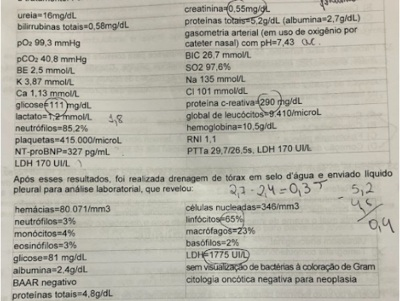
A A combinação de derrame pleural do lado direito, com NT-probnp muito elevado e características laboratoriais do derrame sugestivas de transudato sugerem que o diagnóstico etiológico seja insuficiência cardíaca ou mesmo embolia pulmonar com insuficiência do ventrículo direito, sobretudo devido à dor pleurítica associada.
B O diagnóstico mais provável para o quadro é de derrame pleural parapneumônico complicado, principalmente devido a cirurgia recente, leucocitose leve e proteína c-reativa muito elevada, porém o lactato arterial baixo e a ausência de bactérias à coloração de Gram excluem essa possibilidade.
C Uma importante hipótese é de derrame pleural de etiologia neoplásica, sendo que os principais fatores que a favorecem são a doença de base, a magnitude e a unilateralidade do derrame e a propedêutica do líquido com critérios de Light sugestivos de exsudato.
D A análise do líquido pleural incompleta (sem dosagem de colesterol) impossibilita a diferenciação entre exsudato e transudato, porém a negatividade do BAAR e da citologia oncótica excluem as possibilidades de tuberculose ou neoplasia como causas do derrame pleural desse paciente.
Revisar: possível letra faltando em enunciado
Questão 3 · Derrame Pleural · Hemotórax · Pneumologia · 4000183690Um paciente comparece ao pronto atendimento com dispneia, tosse, dor torácica pleurítica e febre baixa, após queda na rua ocorrida há uma semana, em que houve trauma torácico. Na ocasião, foram realizados raios X de tórax. Considerando a análise da imagem, assinale a alternativa que indica o tratamento para o alívio dos sintomas relatados no referido caso hipotético.

A Drenagem torácica fechada
B Furosemida
C Anti-inflamatórios não hormonais
D Repetir os raios X de tórax após duas semanas
E Início imediato de antibioticoterapia de amplo espectro
Questão 4 · Toracocentese diagnóstica · Pneumologia · 4000183270Durante uma toracocentese diagnóstica, foram observados os seguintes resultados da análise do líquido pleural: relação entre níveis de proteína do líquido sérico maior que 0,5; relação entre dosagem do DHL do líquido sérico maior que 0,6. Com base nesse caso hipotético, assinale a alternativa correta.
A Trata-se de exsudato, podendo ter como diagnóstico diferencial uma insuficiência cardíaca.
B Trata-se de transudato, podendo ter como diagnóstico diferencial uma insuficiência cardíaca.
C Trata-se de transudato, podendo ter como diagnóstico diferencial uma infecção pulmonar.
D Trata-se de exsudato, podendo ter como diagnóstico diferencial uma infecção pulmonar.
E Trata-se de transudato, podendo ter como diagnóstico diferencial uma neoplasia pleural.
Questão 5 · Derrame Pleural · Pneumologia · 4000182825Paciente de 33 anos, sem comorbidades conhecidas, tabagista e com histórico de consumo eventual de bebidas alcoólicas, foi encaminhado da UPA para o Ambulatório por tosse há 4 semanas, inapetência, calafrios eventuais que relaciona com “febre interna” e discreto emagrecimento. Já havia procurado a UBS local, tendo sido prescritos amoxicilina e anti-inflamatórios por 5 dias. Raio X de tórax revelou volumoso derrame pleural à direita com compressão de cerca de metade do pulmão ipsilateral, sem desvio do mediastino. Optou-se por toracocentese. Assinale a assertiva correta sobre a análise do líquido pleural.
A Tabagismo e emagrecimento apontam para derrame neoplásico, sendo a análise citopatológica do líquido suficiente para o diagnóstico.
B Análises de proteínas, pH, LDH e glicose pleurais estabelecem se o líquido é um transudato ou um exsudato.
C Análises macroscópica (aspecto), bioquímica e bacteriológica auxiliam na definição de derrame complicado/não complicado e na definição da conduta terapêutica.
D Exame citológico diferencial auxilia o raciocínio diagnóstico em quadros infecciosos, tendo menor importância se a suspeita for neoplásica.
Questão 6 · Derrame Pleural · Pneumologia · 4000182165Homem, 17 anos, com adenomegalia, perda de peso e febre há 1 mês. Exame físico: linfonodos palpáveis em cadeias cervicais, axilares e inguinais, com 2 a 3 cm de diâmetro. Abdome: indolor, fígado e baço palpáveis. Ap. respiratório e cardiovascular sem alterações. Radiogra a da admissão hospitalar é mostrada na figura A. Nova radiogra a, após 20 dias de internação, é mostrada na figura B. Foram realizadas biópsia de linfonodo cervical e toracocentese diagnóstica. Líquido pleural: aspecto turvo e esbranquiçado; leucócitos: 4363 células/mm³ (VR < 200) (35% de 63% linfocitos); pH: 7.44; LDH: 138 L: proteínas totais: 4,29 g/dL; colesterol total: 54,1 mg/dL; triglicérides: 143 mg/dL. Relação proteína líquido pleural/sangue = 0,58; relação LDH liquido pleural/sangue = 0.53. Qual é o mecanismo siopatológico mais provável para a ocorrência de derrame pleural?
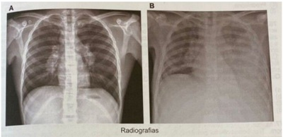
A Inflamação da pleura.
B Obstrução de drenagem linfática.
C Redução da pressão oncótica.
D Aumento na pressão hidrostática.
Questão 7 · Derrame Pleural · Pneumologia · 4000181547Paciente com história de dispneia, com 2 semanas de evolução e piora progressiva. Constatou-se na investigação derrame pleural a esquerda, do qual foi feita toracocentese diagnóstica, com os resultados que se seguem: LDH=180 U/L, proteínas totais=4,1 g/dL, glicose=84 mg/dL, adenosina- -desaminase=12 UI/L, bacterioscopia, cultura para germes comuns e citologia oncótica negativas. Exames séricos: LDH=200 U/L (referência 135- 225), Proteínas Totais=6,8 g/dL (referência 6,5-8,1 g/dL). O próximo passo da investigação deve ser
A analisar a função hepática.
B angiotomografia pulmonar.
C dosagem sérica de NT-pro-BNP.
D analisar novamente o líquido pleural.
E avaliar a positividade para fator reumatoide.
Questão 8 · Derrame Pleural · Pneumologia · 4000181341O plantonista da UTI solicita o parecer da equipe da cirurgia para avaliar um paciente em ventilação mecânica com derrame pleural moderado e di culdade de extubação, mesmo após várias medidas para otimização cardiorrespiratória. O paciente realizou cirurgia cardíaca há 03 dias para revascularização miocárdica e evoluiu com choque cardiogênico. A ultrassonogra a estima um volume de 700ml de líquido acumulado na pleura direita sem debris. Qual a conduta para esse paciente?
A Drenagem do tórax em selo d'água.
B Toracocentese diagnóstica e de alívio.
C Drenagem de tórax guiada por toracoscopia.
D Investigação de possível pneumonia subjacente.
Questão 9 · Derrame Pleural · Fisiopatologia · Pneumologia · 4000181238Sobre a anatomia da pleura e dos pulmões, é correto afirmar que
A a pleura visceral reveste a parede torácica, mediastino, diafragma e pericárdio. A pleura parietal reveste o pulmão e separa os lobos um do outro.
B o pulmão direito é composto de 3 lobos (superior, médio e inferior) e o pulmão esquerdo é formado por 2 lobos (superior e inferior).
C a língula (localizada no pulmão esquerdo) corresponde embriologicamente ao lobo superior direito.
D a fissura oblíqua do pulmão direito separa o lobo superior do lobo médio.
E o lobo superior do pulmão esquerdo é dividido em 3 segmentos (apical, lateral direito e lateral esquerdo).
Questão 10 · Semiologia · Derrame Pleural · 4000178574Paciente do sexo masculino, de 76 anos, pardo, tabagista 40 anos/maço, foi internado em um hospital de atenção secundária, por apresentar tosse com escarro purulento e raios de sangue, temperatura axilar de 38 °C, dor torácica e rouquidão. O paciente relatou que esta era a sua segunda internação por essas manifestações nos últimos três meses, tendo o episódio anterior melhorado com uso de amoxicilina-clavulanato, mas evoluído com hiporexia, astenia e perda de peso no mesmo período. As manifestações atuais se iniciaram havia dois dias. No exame do tórax, o paciente apresentava à ausculta murmúrio vesicular abolido em hemitórax direito e, à percussão, macicez em base de hemitórax direito e hipersonoridade logo acima da área de macicez. No caso desse paciente, as hipóteses diagnósticas a serem cogitadas são
A silicose, tuberculose e pneumotórax.
B pneumonia pós-obstrutiva, derrame pleural e neoplasia pulmonar.
C tromboembolismo pulmonar e neoplasia de cabeça e pescoço.
D granulomatose eosinofílica com poliangiíte e infecção de vias aéreas superiores.
Questão 11 · Empiema · Pneumologia · 4000177592O empiema é uma infecção do espaço pleural que se caracteriza por exsudato, podendo levar a graves complicações infecciosas. No empiema pleural,
A o tratamento na fase exsudativa é feito por meio de decorticação pulmonar.
B a causa mais comum atualmente é a pneumonia estreptocócica e pneumocócica.
C a fase fibrinopurulenta apresenta encarceramento pulmonar.
D o tratamento com rt-PA e DNase intrapleural reduz a necessidade de drenagem cirúrgica.
Questão 12 · Análise do líquido pleural · Pneumologia · 4000169321Um senhor de 60 anos, sem história de trauma, procura a emergência com queixa de dispneia aos mínimos esforços. Uma radiogra a de tórax evidenciou a presença de derrame pleural moderado a direita. O médico realizou uma toracocentese com a nalidade de examinar o líquido pleural. Enviado para análise: relação Proteína Pleural / Proteína Plasmática é maior que 0,5; e, a relação DHL pleural / DHL plasmático é maior que 0,6. Com base nesta informação, podemos dizer que:
A Trata-se de um exsudato e uma das causas pode ser cirrose.
B Trata-se de um exsudato e uma das causas pode ser neoplasia.
C Trata-se de um transudato e uma das causas pode ser embolia pulmonar.
D Trata-se de um transudato e uma das causas pode ser pneumonia bacteriana.
Questão 13 · Derrame pleural tuberculoso · Toracocentese diagnóstica · Análise do líquido pleural · 4000169303Mulher de 52 anos, com dor em região de hemitórax a direita, astenia e hiporexia há 4 semanas. Há 1 semana evoluiu com dispneia e procura do leito. Exame físico: REG, descorada +/4+, desidratada +/4+, anictérica. Ausculta pulmonar: murmúrio vesicular abolido em base de hemitórax a direita, macicez a percussão na mesma região. Foi realizada toracocentese com retirada de 400ml de líquido amarelo citrino. Os seguintes exames foram realizados: Qual a conduta correta? Imagens anexas:

A Esquema RIPE.
B Metilprednisolona.
C Drenagem de tórax.
D Ceftriaxona e azitromicina.
Questão 14 · Critérios de Light · 4000166565São causas de derrame pleural classificado como exsudato, exceto:
A Síndrome de Meigs.
B Uremia.
C Tuberculose pleural.
D Mixedema.
Questão 15 · Derrame pleural tuberculoso · Pneumologia · 4000166377Paciente do sexo masculino, de 45 anos, refere há cerca de três meses tosse seca, dispneia progressiva até nos moderados esforços, febre de 37,9 ºC no período vespertino, perda de oito quilos nesse período e inapetência. Fez uso de vários antibióticos, sem melhora. Nega tabagismo e patologias prévias ou uso de medicações contínuas. Ao exame físico: regular estado geral, afebril, eupneico, emagrecido, consciente mv abolida em terço inferior de hemitórax direito e sem outras alterações ao exame. Traz raio X de tórax, conforme as imagens a seguir. Resultado de análise laboratorial de líquido pleural por toracocentese em hemitórax direito: líquido seroso. Citologia: linfócitos 80%, ausência de células mesoteliais, citologia oncótica negativa, pH 7,35, adenosina desaminase (ada): 70 mg/dl, glicose 70 mg/dl, dhl 500u/l, cultura bacteriana e fúngica negativa, cultura micobactérias em andamento, proteína líquido/proteína sérica >0,5 dhl do líquido/ dhl sérica >0,6. Após avaliação dos exames, qual deve ser o diagnóstico mais provável para esse paciente?
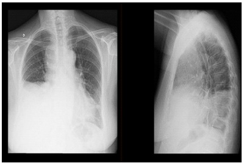
A Pneumonia bacteriana complicada.
B Tuberculose pleural.
C Insuficiência cardíaca congestiva.
D Embolia pulmonar.
Questão 16 · Derrame pleural tuberculoso · Pneumologia · 4000166376Paciente do sexo masculino, de 45 anos, refere há cerca de três meses tosse seca, dispneia progressiva até nos moderados esforços, febre de 37,9 ºC no período vespertino, perda de oito quilos nesse período e inapetência. Fez uso de vários antibióticos, sem melhora. Nega tabagismo e patologias prévias ou uso de medicações contínuas. Ao exame físico: regular estado geral, afebril, eupneico, emagrecido, consciente mv abolida em terço inferior de hemitórax direito e sem outras alterações ao exame. Traz raio X de tórax, conforme as imagens a seguir. Resultado de análise laboratorial de líquido pleural por toracocentese em hemitórax direito: líquido seroso. Citologia: linfócitos 80%, ausência de células mesoteliais, citologia oncótica negativa, pH 7,35, adenosina desaminase (ada): 70 mg/dl, glicose 70 mg/dl, dhl 500u/l, cultura bacteriana e fúngica negativa, cultura micobactérias em andamento, proteína líquido/proteína sérica >0,5 dhl do líquido/ dhl sérica >0,6. Qual deve ser a conduta inicial para esse paciente?

A Iniciar antibiótico.
B niciar diurético.
C Realizar biópsia pleural.
D Realizar drenagem torácica fechada.
Questão 17 · Pleurodese · Indicações · Cirurgia · 4000166235Mulher, 50 anos de idade, apresenta derrames pleurais de repetição secundários à neoplasia de mama. Radiogra a de tórax demonstra derrame pleural moderado à esquerda. A biópsia da pleura com agulha de COPE revelou a presença de implante neoplásico de tumor mamário. A conduta mais adequada é
A videotoracoscopia com biópsia pleural para realização de imunohistoquímica.
B drenagem pleural seguida de pleurodese à esquerda.
C videotoracoscopia e análise do líquido pleural com pesquisa de células neoplásicas.
D drenagem pleural e pesquisa de células neoplásicas em líquido pleural.
Questão 18 · Pleurodese · 4000165617Homem, 67 anos de idade, está em tratamento paliativo para neoplasia de reto estadio IV. Tem diabete melito e é ex- tabagista. Há 4 semanas, foi submetido a toracocentese de alívio, com retirada de 1100 mL. Houve melhora dos sintomas e expansão pulmonar completa em radiogra a de controle. Retorna ao ambulatório com queixa de há 1 semana recidiva da dispneia e tosse seca. Nega dor torácica e febre. Apresenta KPS (performance status de Karnofsky) de 60. Abaixo a radiografia de tórax atual. Análise do líquido pleural confirmou etiologia neoplásica. Qual é a conduta nesta situação?
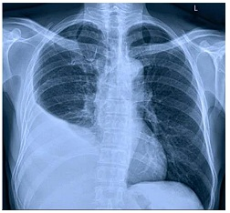
A Repetir a toracocentese esvaziadora.
B Drenagem com cateter pleural e pleurodese.
C Drenagem com cateter pleural e manter até diminuir o débito.
D Toracotomia com pleurectomia parietal ampla.
Questão 19 · Derrame Pleural · Pneumologia · 4000165166Paciente feminina com 58 anos de idade em tratamento domiciliar de pneumonia evolui com quadro de piora clínica com dispneia. Realiza um raio X de tórax que evidencia um derrame pleural á direita acometendo cerca de 40% da área. Em relação a este caso clínico, analise as assertivas abaixo. I - A toracocentese não apresenta contraindicações absolutas, porém tem algumas relativas, dentre as quais o uso de anticoagulantes e deformidades da parede torácica. II - Derrame pleural parapneumônico com dosagem de pH menor que 7,2 associado à dosagem de glicose inferior a 40 mg% é indicativo de drenagem pleural. III - Os critérios de Light são utilizados para diferenciar os transudatos dos exsudatos, sendo os parâmetros por ele avaliados: proteína, LDH e glicose tanto do líquido quanto sérica. IV - O derrame pleural pode ser drenado através de punção brônquica distal realizada por um broncoscópio flexível. Estão corretas
A III apenas.
B I e II apenas.
C I e IV apenas.
D I, II e III apenas.
E todas assertivas estão corretas.
Questão 20 · Derrame pleural tuberculoso · Tuberculose extrapulmonar · 4000165130São características da análise do liquido pleural em caso de turberculose pleural
A exsudato – glicose normal ou baixa – predomínio de linfócitos – ADA positivo.
B transudato – glicose normal ou baixa – predomínio de linfócitos – ADA positivo.
C transudato – glicose alta – predomínio de polimorfonucleares – ADA negativo.
D exsudato – glicose normal ou baixa - predomínio de polimorfonucleares – ADA positivo.
E exsudato – glicose normal ou alta - predomínio de polimorfonucleares – ADA positivo.
Questão 21 · Pneumologia · Indicações · 4000165023Mulher, 40 anos de idade, procura o pronto atendimento queixando-se de dispneia, tosse com expectoração amarelada e febre há 48 horas. Nega comorbidades ou tabagismo. Ao exame físico, apresenta-se em regular estado geral, com FR: 28 irpm, PA: 120x70 mmHg, FC: 90 bpm, Temperatura axilar: 38,0°C, SatO₂: 94%. Ao exame torácico, macicez à percussão e murmúrios vesiculares abolidos nos dois terços inferiores do hemitórax direito, sem ruídos adventícios à ausculta. Radiogra a de tórax evidenciou derrame pleural à direita. Com base nos dados do caso clínico, indique o parâmetro que recomendaria a drenagem pleural nessa paciente.
A pH abaixo de 7,2 no líquido pleural.
B DHL acima de 500 U/L no líquido pleural.
C Relação entre DHL do líquido pleural e sérica acima de 0,6.
D Relação entre proteínas totais do líquido pleural e séricas abaixo de 0,5.
Questão 22 · Manejo clínico e diagnóstico · Toracocentese · Pneumologia · 4000165022Mulher, 40 anos de idade, procura pronto-atendimento queixando-se de dispneia, tosse com expectoração amarelada e febre, há 48 horas. Nega comorbidades ou tabagismo. Ao exame físico, apresenta-se em regular estado geral, com FR: 28irpm, PA: 120x70mmHg, FC: 90bpm, Temperatura axilar: 38,0°C, SatO₂: 94%. Ao exame torácico, macicez à percussão e murmúrios vesiculares abolidos nos dois terços inferiores de hemitórax direito, sem ruídos adventícios à ausculta. Radiografia de tórax evidenciou derrame pleural à direita. Com base nos dados do caso clínico, A conduta diagnóstica mais adequada, neste momento, é
A não realizar procedimento invasivo, pois a presença de febre indica que o derrame é parapneumônico.
B realizar toracocentese para esvaziamento completo do derrame, visto que há infecção associada.
C puncionar na linha hemiescapular direita, na borda inferior do arco costal, logo abaixo do limite superior do derrame.
D realizar toracocentese diagnóstica para avaliar a etiologia do derrame.
Questão 23 · Derrame Pleural · Exame Pulmonar · Pneumologia · 4000165021Mulher, 40 anos de idade, procura pronto-atendimento queixando-se de dispneia, tosse com expectoração amarelada e febre, há 48 horas. Nega comorbidades ou tabagismo. Ao exame físico, apresenta-se em regular estado geral, com FR: 28irpm, PA: 120x70mmHg, FC: 90bpm, Temperatura axilar: 38,0°C, SatO₂: 94%. Ao exame torácico, macicez à percussão e murmúrios vesiculares abolidos nos dois terços inferiores de hemitórax direito, sem ruídos adventícios à ausculta. Radiografia de tórax evidenciou derrame pleural à direita. Com base nos dados do caso clínico, Pode-se afirmar que, em relação à propedêutica torácica,
A os dados de exame físico, já fornecidos, permitiriam fechar o diagnóstico de derrame pleural.
B o frêmito toracovocal reduzido auxiliaria na diferenciação entre derrame pleural e pneumonia.
C o atrito pleural é auscultado na maior parte dos pacientes com quadro semelhante.
D a presença de pectorilóquia afônica permitiria fechar o diagnóstico de derrame pleural.
Questão 24 · Manejo clínico e diagnóstico · Ultrassonograf ia de tórax · Pneumologia · 4000164655Um paciente tabagista, de 54 anos, com dor torácica ventilatório dependente e emagrecimento de 10 kg, está em investigação. Ao exame físico apresenta abaulamento de hemitórax direito, diminuição da ausculta da voz e abolição de MV em 2/3 inferiores de hemitórax direito e macicez à percussão nesta área. Além disso apresenta abaulamento dos espaços intercostais inferiores à expiração. Assinale a alternativa que indica corretamente o diagnóstico sindrômico e o exame complementar para confirmar tal diagnóstico.
A Provável derrame pleural volumoso e ecocardiograma.
B Atelectasia de lobo inferior direito e radiografia de tórax póstero-anterior e lateral direita.
C Provável derrame pleural volumoso e ultrassonografia de tórax
D Provável grande massa tumoral invadindo parede torácica e tomografia computadorizada de tórax
E Provável grande massa tumoral e radiografia de tórax.
Questão 25 · Análise do líquido pleural · Pneumologia · 4000163533Em relação ao derrame pleural, é correto afirmar:
A Um exsudato deve conter (1) uma proporção de proteína no líquido pleural em relação à proteína sérica maior que 0,5; (2) uma proporção de desidrogenase láctica (DHL) no líquido pleural em relação à DHL sérica maior que 0,6; ou (3) um nível de DHL no fluido pleural maior que dois terços do limite superior da normalidade. Quando todos os três critérios são atendidos, a sensibilidade, especificidade e o valor preditivo positivo excedem 98% para definir um derrame pleural exsudativo
B Um nível de colesterol superior a 45 mg/dl é consistente com derrame pleural transudativo.
C No derrame pleural parapneumônicoexsudativo, está sempre indicada a drenagem do tórax do paciente.
D Um derrame pleural parapneumônico com pH menor que 7,2 e glicose pleural menor que 60 mg/dl indica que é um derrame não complicado e, portanto, não precisa de drenagem torácica.
E Empiema tuberculoso ou efusão pleural tuberculosa são denominações da mesma situação fisiopatológica, na qual a tuberculose atinge o espaço pleural por disseminação hematogênica ou pelo sistema linfático.
Questão 26 · Toracocentese · Exsudato X Transudato · Bioquímica · 4000145975Após a realização de toracocentese em paciente com derrame pleural de etiologia a esclarecer, quais exames são fundamentais para auxílio na diferenciação entre exsudato e transudato?
A Proteínas totais e DHL
B Proteínas totais e albumina
C DHL e pH
D DHL e glicose
Questão 27 · Pneumologia · Critérios de Light · 4000145680Na prática clínica, deparamo-nos frequentemente com pacientes com derrame pleural. Diante disso, marque a opção correta.
A De acordo com os Critérios de Light, um derrame pleural é classificado como exsudativo quando a razão da proteína total (PTN) pleural sobre a dosagem no plasma é menor do que 0,5 (PTN pleural/PTN sangue <0,5).
B A insuficiência cardíaca e cirrose hepática são as principais causas de derrame pleural exsudativo.
C De acordo com os Critérios de Light, um derrame pleural é classificado como exsudativo quando a razão da proteína total (PTN) pleural sobre a dosagem no plasma é maior do que 0,5 (PTN pleural/PTN sangue >0,5).
D De acordo com os Critérios de Light, um derrame pleural é classificado como exsudativo quando a razão do LDH pleural sobre a dosagem do LDH no plasma é menor do que 0,6 (LDH pleural/LDH sangue <0,6).
E De acordo com os Critérios de Light, um derrame pleural é classificado como exsudativo quando a razão do LDH pleural sobre a dosagem do LDH no plasma é menor do que 0,5 (LDH pleural/LDH sangue <0,5).
Questão 28 · Empiema · Pneumologia · 4000143199Homem de 45 anos, em tratamento de pneumonia comunitária, usando amoxicilina-clavulanato, procura atendimento médico pela persistência de febre e dor torácica. A tomogra a computadorizada (TC) de tórax mostra in ltrado alveolar em lobo inferior direito, associado a derrame pleural loculado, cuja punção revelou líquido turvo, com pH = 7,10, leucócitos = 50.000/mm3 e cultura positiva para mais adequada para a resolução desse caso é:
A realizar nova toracocentese e esvaziar o conteúdo pleural
B aumentar o espectro antimicrobiano, associando rifampicina
C colher hemoculturas e pesquisa de BAAR e Genexpert no líquido pleural
D colocar dreno de tórax com instilação pleural de deoxirribonuclease e trombolíticos
Questão 29 · Manejo clínico e diagnóstico · Análise do líquido pleural · 4000142494Em uma avaliação inicial de um adulto com derrame pleural à esquerda, de moderado volume, os seguintes parâmetros foram determinados: Assinale a condição que apresenta a menor probabilidade de ser a causa deste derrame pleural
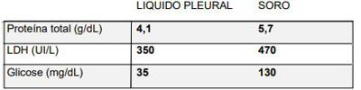
A Tuberculose.
B Artrite reumatoide.
C Metástase de carcinoma.
D Pancreatite crônica.
E Pneumonia (parapneumônico complicado).
Questão 30 · Empiema · Manejo cirúrgico · Tratamento · 4000142001Paciente do sexo masculino, 45 anos, diabético, tabagista, apresenta quadro de dor torácica ventilatório-dependente em terços médio e inferior do hemitórax direito, associado a tosse produtiva e febre alta diária, com evolução de 1 semana. Ao exame físico, o paciente se apresenta levemente dispneico, taquicárdico e normotenso, com murmúrio vesicular diminuído em base do hemitórax direito associado a estertoração crepitante. Leucograma: 16.000 leucócitos, Proteína C Reativa: 64mg/dl. À Radiogra a de tórax, observamos condensação dos terços médio e inferior do pulmão direito associado a derrame pleural de volume moderado. Sobre a abordagem propedêutica e terapêutica deste paciente, assinale a alternativa CORRETA:
A A Cirurgia Toracoscópica Vídeo-Assistida (VATS) é opção adequada para tratamento do empiema pleural nos casos de falha terapêutica com drenagem fechada de tórax.
B Já que a radiografia de tórax já documentou a efusão pleural, a ultrassonografia torácica não traria informações extras de relevância para o caso.
C Caso a análise do líquido pleural coletado à toracocentese evidenciasse pH > 7.2, desidrogenase lática entre 100 a 190 U/l e glicose > 22mmol/l, fechamos o diagnóstico de empiema, estando indicada a drenagem fechada de tórax.
D Os dados fornecidos acima nos permitem fechar o diagnóstico de empiema pleural na fase organizada, estando indicada a toracotomia urgente.
Questão 31 · Derrame pleural tuberculoso · 4000141974Paciente refere que há 2 semanas passou a sentir dor no hemitórax esquerdo, piorava com a inspiração profunda e que vem se acentuando. Paralelamente passou a referir dispneia também crescente, além de tosse seca, febre persistente diária (38°C) e perda ponderal. Procurou assistência médica, sendo-lhe prescrito analgésicos, antitérmicos e sedativos para tosse. Como não houve melhora procurou centro de saúde. Ao exame físico: tórax simétrico, sem abaulamentos ou retrações, respiração predominantemente abdominal Aparelho respiratório: frequência respiratória 20Irpm. Macicez na base do hemitórax direito. Frêmito tóraco vocal diminuído na metade inferior do mesmo hemitórax. Sistema cardiovascular: Frequência cardíaca 96bpm. Ritmo cardíaco regular em 2 tempos sem sopros e pressão arterial: 120x80 mmHg, exames complementares: Radiogra a de tórax: imagem de hipotransparencia ocupando os 2/3 inferiores do pulmão Direito. Realizado toracocentese diagnóstica cujo resultado da bioquímica do líquido pleural demonstrou: ph:7,6 DHL: 200; proteínas: 3,8; citometria: 1200 células; na citometria evidenciou 85% de linfócitos e 15 % de neutrófilos; ADA: 70. Baseada no quadro clínico relatado acima qual a resposta
A Derrame pleural tipo transudato
B Derrame parapneumonico
C Derrame pleural por tuberculose de pleura
D Pneumonia bacteriana
Questão 32 · Indicações · 4000141672Homem de 48 anos encontra-se no 5o dia de tratamento de pneumonia comunitária com cefalosporina de 2a geração, porém está mantendo febre e leucocitose. Raio X de tórax: velamento do 1/3 inferior do hemitórax direito, formando a parábola de Damoiseau. Realizada toracocentese diagnóstica. Exames do líquido pleural: aspecto amarelo opaco; pH 7,2; glicose 30 mg/dL; DHL 1 800 UI/L. A conduta mais adequada é a
A drenagem torácica.
B tomografia computadorizada de tórax.
C broncoscopia com lavado broncoalveolar.
D decorticação pulmonar.
Questão 33 · Decorticação · 4000141490Paciente masculino, 42 anos, diabético, refere que há duas semanas iniciou quadro gripal, com tosse e expectoração clara que evoluiu para amarelo-esverdeada, associado à febre e à queda do estado geral. Há 3 dias, foi admitido na UPA onde foi submetido à drenagem pleural fechada tecnicamente correta com saída de pus e encaminhado ao serviço de cirurgia devido a não melhora radiológica, sem reexpansão pulmonar e com espessamento pleural importante. A conduta correta, nesse caso, é
A manter o dreno e a antibioticoterapia indefinidamente até a melhora radiológica.
B retirar o dreno e manter apenas a antibioticoterapia.
C submeter o paciente à nova toracocentese diagnóstica.
D realizar ventilação não invasiva, além de fisioterapia respiratória 3 vezes ao dia.
E realizar tomografia de tórax e considerar o paciente candidato à decorticação pulmonar.
Questão 34 · Indicação · 4000141489Paciente masculino, indígena, 24 anos, é admitido no pronto-socorro com queixas de dor pleurítica à esquerda há 2 semanas, associada à tosse seca, sudorese noturna, emagrecimento e febre baixa. Buscou atendimento, hoje, devido à dispneia a moderados esforços. Apresenta sinais vitais estáveis e hemograma sem leucocitose. No exame de raios-x de tórax, apresenta sinais de derrame pleural à esquerda. Para esse caso, assinale a alternativa que indica a conduta adequada.
A A conduta inicial ideal é drenagem pleural fechada e iniciar antibióticos imediatamente.
B A conduta inicial ideal é prescrever antibióticos e dar alta, orientando a retornar se não houver melhora dos sintomas.
C O paciente deve receber medicações para dor e ser encaminhado ao ambulatório de oncologia para investigação diagnóstica.
D O paciente deve ser submetido à toracocentese diagnóstica com pesquisa de células neoplásicas e encaminhado ao ambulatório de oncologia.
E O paciente deve ser submetido à toracocentese diagnóstica e de alívio, sendo a dosagem de Adenosina Deaminase (ADA) imprescindível.
Questão 35 · Exsudato X Transudato · 4000138066O primeiro passo para determinar a etiologia de um derrame pleural é identificar se ele é transudato ou exsudato. E característica do transudato:
A relação de proteinas nolíquido pleural/soro > 0,5.
B pode ser decorrente de pneumonias bacterianas.
C relação entre LDH no líquido pleural/soro > 0,6.
D LDH no líquido pleural maior que 2/3 do limite superior da sorologia.
E insuficiência ventricular esquerda é uma das causas mais comuns,
Questão 36 · Manejo clínico e diagnóstico · Fisiopatologia · Quadro clínico · 4000129921O espaço pleural é um espaço virtual que separa as pleuras visceral e parietal. Alguns distúrbios deste espaço podem perturbar o equilíbrio da produção de líquido pleural e sua absorção. Em relação aos derrames pleurais, assinale a assertiva correta:
A Pacientes com derrame pleural maligno não devem ser puncionados pelo risco de desenvolvimento de metástases locais.
B A toracocentese é o método ideal para o diagnóstico e o tratamento inicial, não havendo contra indicação a sua realização.
C A maioria dos derrames pleurais benignos é transudato e o tratamento deve ser direcionado a causa subjacente, como ICC, ascite e desnutrição.
D Os critérios de Light são utilizados para diferenciar os transudatos dos exsudatos, sendo os parâmetros por ele avaliados: proteína, LDH e glicose tanto do líquido quanto sérica.
E O tratamento dos derrames pleurais deve ser realizado independente da sua causa básica, geralmente toracocentese de alívio, mas a decorticação pode ser necessária em alguns casos.
Questão 37 · Toracocentese · Tratamento · Pneumologia · 4000129741Paciente masculino, 27 anos, chega à consulta relatando história com três dias de evolução de dor torácica ventilatório- dependente à direita, irradiada para ombro D, tosse produtiva purulenta e febre de até 38,7°C. Nega alergias, tabagismo ou outros problemas de saúde. Ao exame físico apresenta-se em bom estado geral, com frequência respiratória de 20 movimentos/minuto, frequência cardíaca de 118 batimentos/minuto, pressão arterial de 110/80 mmHg, oximetria de pulso com saturação de O2 de 95% em ar ambiente. Ausculta pulmonar com diminuição do murmúrio vesicular e estertores à direita. A radiogra a de tórax evidencia área de consolidação em terço médio do campo pulmonar direito, associado a derrame pleural ocupando o terço inferior desse mesmo campo pulmonar. Assinale a alternativa com a conduta indicada.
A Internação hospitalar para antibioticoterapia e toracocentese diagnóstica.
B Drenagem de tórax em selo d’água pois trata se de pneumonia necrotizante com empiema.
C Tomografia computadorizada de tórax e inter- nação hospitalar pois trata-se de caso alta- mente provável para COVID-19.
D Internação com antibioticoterapia de amplo espectro e cobertura para germes produtores de carbapenemase.
E Tratamento ambulatorial com antibiótico betalactâmico associado a corticoide em dose baixa e reavaliação em sete dias.
Questão 38 · Manejo clínico e diagnóstico · Pneumologia · Radiograf ia · 4000129615Paciente do sexo masculino, de 42 anos, refere que há 40 dias apresentou quadro de tosse com escarro purulento, febre diária de 38 ºC, dor torácica ventilatório dependente. Fez uso de azitromicina por cinco dias sem melhora. Procurou atendimento médico e realizou exames complementares, conforme descritos a seguir: Hemograma: hemoglobina 13, leucócitos 13.000, bastões 5%, neutrófilo 75% e plaquetas 250.000. Raios X de tórax conforme imagem a seguir. Toracocentese do hemitórax direito: líquido pleural purulento:PH 7,12, glicose 38 mg%, DHL 1.100, predomínio de neutrófilos, aguardando culturas. Qual é o tratamento adequado para esse paciente?

A Esquema antimicrobiano para tuberculose.
B Antibioticoterapia e toracocentese de repetição.
C Antibioticoterapia e observação.
D Antibioticoterapia e drenagem pleural.
Questão 39 · Derrame Pleural · 4000129614Paciente do sexo masculino, de 42 anos, refere que há 40 dias apresentou quadro de tosse com escarro purulento, febre diária de 38 ºC, dor torácica ventilatório dependente. Fez uso de azitromicina por cinco dias sem melhora. Procurou atendimento médico e realizou exames complementares, conforme descritos a seguir: Hemograma: hemoglobina 13, leucócitos 13.000, bastões 5%, neutrófilo 75% e plaquetas 250.000. Raios X de tórax conforme imagem a seguir. Toracocentese do hemitórax direito: líquido pleural purulento:PH 7,12, glicose 38 mg%, DHL 1.100, predomínio de neutrófilos, aguardando culturas. Nesse caso, qual o provável diagnóstico?
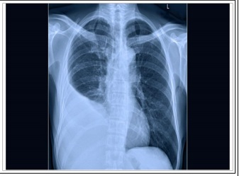
A Derrame pleural parapneumônico não complicado.
B Empiema pleural.
C Pneumonia comunitária.
D Tuberculose pleural.
Questão 40 · Inf ectologia · Derrame pleural tuberculoso · 4000129595Na investigação de um derrame pleural, há indicativo de tuberculose, se o líquido pleural apresentar:
A relação proteína sérica / proteína pleural > 0,5; ADA > 15 U/L; células mesoteliais > 5%.
B eosinófilos > 30%; células mesoteliais > 5%; proteínas < 2,5 g/dL.
C linfócitos > 65%; ADA < 30 U/L; células mesoteliais < 5%.
D proteínas > 4,5 g/dL; ADA > 40 U/L; células mesoteliais < 5%.
Questão 41 · Derrame pleural tuberculoso · Toracocentese diagnóstica · 4000129221Adolescente de 12 anos, morador de Porto Alegre, sem comorbidades prévias, foi internado devido a pneumonia comunitária com pequeno derrame pleural (não puncionável). Após 72 horas de tratamento com penicilina cristalina, permanecia febril. A radiogra a de tórax foi repetida e evidenciou aumento do derrame pleural, tendo sido realizada toracocentese, cujo resultado mostrou líquido pleural com aspecto não purulento e predomínio de linfócitos (70%). Considerando a principal hipótese diagnóstica, que outra alteração poderia ser encontrada?
A Aumento da adenosina deaminase no líquido pleural (110 UI/I)
B Razão proteínas do líquido pleural/proteínas séricas < 0,5
C Razão LDH do líquido pleural/LDH sérico < 0,6
D Aumento do percentual de células mesoteliais no líquido pleural (> 5%)
Questão 42 · Derrame Pleural · Empiema · 4000127328Paciente masculino, 26 anos, internado há 3 dias com quadro de tosse produtiva, febre e dor torácica à esquerda iniciado uma semana antes da admissão. Na admissão, constatadas febre, pressão arterial e frequência respiratória normais. Ausculta pulmonar apresentava-se com murmúrio vesicular reduzido em 2/3 inferiores de hemitórax esquerdo e frêmito toracovocal reduzido na mesma localização. Encontra-se em uso de ceftriaxona e azitromicina, hoje mantendo quadro clínico e exame físico semelhantes aos da admissão. Ultrassonogra a mostrou derrame pleural ocupando os 2/3 inferiores do hemitórax esquerdo, sendo submetido a toracocentese com retirada de 60 ml de líquido citrino cujo estudo evidenciou pH = 7,16, glicose = 35 mg/dl, celularidade aumentada às custas de neutró los, com características de exsudato. Cultura do líquido pleural ainda está em andamento. Qual das opções abaixo descreve a conduta adequada a ser realizada no contexto clínico descrito?
A Ampliar esquema antimicrobiano para piperacilina + sulbactam.
B Manter conduta atual até resultado de cultura obtida do líquido pleural.
C Realizar tomografia de tórax e indicar decorticação se derrame pleural estiver livre.
D Realizar drenagem pleural com posicionamento de dreno na cavidade acometida.
Questão 43 · Análise do líquido pleural · Cirurgia · Biópsia pleural · 4000120279Mulher de 64 anos apresenta dispneia aos grandes esforços e emagrecimento há 1 mês. Radiogra a de tórax: velamento do 1/3 médio e inferior do hemitórax direito. Realizada toracocentese diagnóstica. Exames do líquido pleural: pH 7,28; DHL 890 U/L; glicose 85 mg/dL; proteína 4,2 g/dL; celularidade 90% de linfócitos; adenosina deaminase: normal e citopatológico negativo para neoplasia. Exames séricos: DHL 650 U/L; proteína 5,5 g/dL. Após a análise do derrame pleural, a conduta é
A biópsia de pleura.
B drenagem pleural fechada.
C pleurodese.
D observação.
Questão 44 · Etiologias específ icas · Manejo clínico e diagnóstico · Tratamento cirúrgico · 4000120186A respeito dos derrames pleurais, assinale a alternativa correta.
A Nos transudatos, é importante a pesquisa de sinais e sintomas de insuficiência cardíaca, evidências de nefro ou hepatopatia ou ainda traumas ou cirurgias de coluna torácica e neoplasias.
B Na tuberculose pleural, o primeiro sintoma pode ser a dor torácica que, em alguns casos, precede o aparecimento do derrame.
C Independentemente da etiologia, todo paciente portador de derrame pleural deve ser submetido à drenagem torácica, pelo risco de expansão rápida do volume líquido e de morte por insuficiência respiratória.
D Os exsudatos pleurais têm causas variadas, com destaque para neoplasias (inclusive com pesquisa de exposição ao amianto), insuficiência cardíaca, etilismo crônico e doenças relacionadas, doenças do colágeno, cirurgias torácicas prévias, doenças pleurais prévias, medicamentos em uso e quadros febris de origem não esclarecida.
E A drenagem aberta da cavidade torácica, ou pleurostomia, está praticamente banida da prática médica atual, restringindo-se sua indicação aos raros casos de empiema pleural tuberculoso.
Questão 45 · Manejo clínico e diagnóstico · Exsudato X Transudato · Bioquímica · 4000119716Numa investigação de um paciente com derrame pleural, podemos a rmar que se trata de um exsudato em todos os casos abaixo, exceto:
A A proporção de proteína pleural e sérica é > 0,5.
B A proporção de Lactato desidrogenase (LDH pleural e sérica > 0,6.
C Paciente apresenta BAAR do escarro positivo.
D Associação com febre e tosse produtiva de início recente e glicose no líquido pleural < 60 mg/dL.
E Associação com eritema palmar, telangiectasias, ginecomastia e varizes de esôfago.
Questão 46 · Manejo clínico e diagnóstico · Toracocentese diagnóstica · Exsudato X Transudato · 4000114600São classificações de um derrame pleural como exudato, EXCETO:
A A linfocitose.
B O valor global de LDH no líquido.
C A quantidade de proteínas no líquido.
D A razão entre o LDH pleural e plasmático.
Questão 47 · Empiema · Manejo clínico e diagnóstico · Quadro clínico · 4000108548Um paciente de 35 anos desenvolve derrame pleural direito durante um quadro de pneumônico em tratamento. Devido à persistência da febre no 7ºC dia de antibioticoterapia, decide-se pela punção pleural diagnóstica. O aspecto do líquido é amarelo citrino; a análise laboratorial revelou: relação proteína total pleural/ proteína total plasmática = 0,6; relação DHL pleural/DHL plasmático = 0,7; pH pleural = 6,9; glicose = 35 mg/dL; leucócitos = 1.800/mL citologia: polimorfonucleares. Assinale a alternativa que corresponde a conduta neste caso:
A drenagem pleural devido à grande possibilidade de evolução para franco empiema.
B associação com anti-inflamatório não hormonal para facilitar a reabsorção do derrame.
C introdução de diurético para acelerar a reabsorção do derrame.
D trata-se de um derrame pleural parapneumônico: fisioterapia respiratória e tratamento conservador.
Questão 48 · Indicação · Empiema · Manejo clínico e diagnóstico · 4000107503Paciente de 53 anos, sexo masculino, ex-tabagista, chega para consulta ambulatorial encaminhado do pronto-socorro com queixa de emagrecimento e dor em hemitórax esquerdo há mais de 4 meses associada a calafrios ocasionais. No exame físico, encontra-se em regular estado geral, emagrecido, anemiado +/4+, acianótico, anictérico, afebril e eupneico, com murmúrio vesicular diminuído em base pulmonar esquerda. Traz uma tomogra a no dia da consulta realizada no pronto- socorro que mostra espessamento pleural esquerdo associado a moderado derrame pleural, sem outras alterações significativas. Frente ao quadro clínico exposto, qual a hipótese diagnóstica e o procedimento a ser realizado?
A Derrame parapneumônico e drenagem de tórax após critérios de Light.
B Tuberculose pleural e punção diagnóstica e de alívio.
C Derrame transudativo e punção de alívio.
D Empiema e drenagem de tórax.
E Neoplasia pulmonar e pleuroscopia com biópsia.
Questão 49 · Fases do empiema · 4000107176Quais são as fases cronológicas de desenvolvimento dos empiemas pleurais?
A Parapneumônica, transudativa e fibrinosa.
B Exsudativa, fibrinopurulenta e organização.
C Atelectásica, infecciosa e cicatricial.
D Transudativa, infecciosa e fibrinosa.
Questão 50 · Derrame pleural neoplásico · Derrame pleural no TEP · Critérios de Light · 4000083803O líquido pleural de um paciente de 45 anos, internado para esclarecimento diagnóstico de derrame pleural direito, tem LDH = 100UI/L e proteína = 1,5g/dL. O sangue colhido simultaneamente mostrou LDH = 350UI/L (normal = 190 a 430UI/L) e proteínas totais = 6,2g/dL (normal = 6 a 8g/dL). O quadro clínico apresentado mais provavelmente constaria de:
A emagrecimento, hemoptoicos e massa pulmonar central
B tosse purulenta, febre e condensação no lobo inferior
C dispneia aos esforços, ortopneia e cardiomegalia
D dispneia súbita, dor torácica e dímero D elevado
Questão 51 · Quadro clínico · Empiema · Manejo clínico e diagnóstico · 4000061430Mulher de 72 anos apresenta história clínica compatível com pneumonia comunitária. Raio x de tórax compatível com derrame pleural ocupando o 1/3 inferior do hemitórax esquerdo. Após toracocentese diagnóstica, a drenagem torácica imediata está indicada se:
A pH: 7,15, glicose: 35 mg%, DHL: 5000 UI/L, predomínio de polimorfonucleares.
B pH: 7,30, glicose: 80 mg%, DHL: 800 UI/L, predomínio de linfócitos e monócitos.
C Relação entre proteína do líquido pleural e a sérica = 0,6, relação entre DHL do líquido pleural e a sérica = 0,7 e DHL no líquido pleural > 2/3 do limite superior no soro.
D Relação entre proteína do líquido pleural e a sérica = 0,4, relação entre DHL do líquido pleural e a sérica = 0,5 e DHL no líquido pleural <2/3 do limite superior no soro.
Questão 52 · Indicação · Empiema · Manejo clínico e diagnóstico · 4000056587Mulher, 70 anos de idade, internada há vários dias devido a complicação de cirurgia abdominal, evoluiu com quadro infeccioso de foco pulmonar e necessidade de antibioticoterapia. Após 6 dias de tratamento, apresentou queixa de cansaço e teve piora dos parâmetros infecciosos laboratoriais. Ao exame físico, o murmúrio vesicular encontrava-se abolido em base direita. Foi solicitada radiogra a de tórax, que evidenciou derrame pleural direito, sendo optado por indicar toracocentese. A análise do líquido trazia: pH 7,1; glicose 45 mg/dL; DHL 1100 U/L. Considerando o caso acima, pode-se afirmar que:
A Trata-se de derrame pleural complicado e a conduta é drenagem de tórax com sistema fechado.
B O derrame tem características de exsudato não complicado, e o tratamento clínico com antibiótico e fisioterapia é o mais indicado.
C Trata-se de transudato e a paciente provavelmente encontra-se descompensada do ponto de vista cardiológico.
D Deve ser realizada nova toracocentese de alívio.
Questão 53 · Manejo clínico e diagnóstico · Tratamento cirúrgico · Análise do líquido pleural · 4000053577Criança do sexo masculino, 2 anos, em tratamento de pneumonia extensa, bilateral, com pneumatoceles à direita. Derrame pleural pequeno à esquerda. Febre persistente 72 horas depois de iniciada a administração de vancomicina. Leucocitose e desvio à esquerda. A punção pleural aspirou 250ml de líquido seroso, levemente turvo, com 100% de neutrófilos, pH: 6,80 – DHL: 1.200UIA – Glicose: 30mg% e bacterioscópico: cocos gram(+) – Cultura: esta lococo dourado. Que atitude adotaria neste caso?
A Drenagem fechada.
B Toracocenteses repetidas.
C Pleuroscopia com drenagem fechada.
D Toracotomia com descorticação precoce.
E Drenagem pleural fechada + injeção de fibrinolíticos.
Questão 54 · Manejo clínico e diagnóstico · Derrame pleural tuberculoso · Exsudato X Transudato · 4000045734Sobre o derrame pleural, é correto afirmar:
A Os exsudatos apresentam, pelo menos, um dos três critérios seguintes: relação da proteína total do líquido pleural sobre a proteína total sérica maior que 0,5; desidrogenase láctica (DHL) do líquido pleural superior a dois terços do limite superior da normalidade da DHL sérica ou relação da DHL pleural sobre a sérica maior que 0,6.
B A toracocentese diagnóstica deve ser realizada sempre, pois é fundamental para definir a intervenção terapêutica.
C Um hemotórax é definido por uma relação do hematócrito do líquido pleural sobre o hematócrito sérico maior que 0,8.
D A cultura do líquido pleural tem uma acurácia diagnóstica elevada para o diagnóstico de tuberculose pleural.
E O pH do líquido pleural, normalmente, não é um parâmetro que define a necessidade de drenagem torácica.
Questão 55 · Indicação · Manejo clínico e diagnóstico · Contraindicação · 4000039475Paciente 27 anos chega ao PS com quadro de dispneia aos mínimos esforços. Radiogra a de tórax demonstrou presença de derrame pleural moderado à direita. Realizada toracocentese diagnóstica e de alívio, e colhidos exames bioquímicos sanguíneos que revelaram: Líquido pleural: proteínas totais 5,2 g/dL; LDH 606 UI/L; Soro: proteínas totais 4,0 g/Dl; LDH 400 UI/L; Valor de referência LDH soro <248 UI/L O provável diagnóstico para este paciente é
A ICC.
B Cirrose.
C Síndrome nefrótica.
D Colagenose.
Questão 56 · Semiologia · Manejo clínico e diagnóstico · Toracocentese terapêutica ou de alívio · 4000039468Paciente 27 anos chega ao PS com quadro de dispneia aos mínimos esforços. Radiogra a de tórax demonstrou presença de derrame pleural moderado à direita. Realizada toracocentese diagnóstica e de alívio, e colhidos exames bioquímicos sanguíneos que revelaram: Líquido pleural: proteínas totais 5,2 g/dL; LDH 606 UI/L; Soro: proteínas totais 4,0 g/Dl; LDH 400 UI/L; Valor de referência LDH soro <248 UI/L Qual achado que NÃO é esperado no exame físico desse paciente:
A Macicez à percussão em base direita.
B FTV aumentado em base direita.
C MV abolido em base direita.
D Sinal de Lemos Torres.
Questão 57 · Manejo clínico e diagnóstico · Derrame pleural tuberculoso · Derrame pleural neoplásico · 4000036366São condições clínicas tipicamente associadas a exsudato pleural, exceto:
A Câncer.
B Infecções virais.
C Tuberculose.
D Insuficiência cardíaca.
Questão 58 · Quadro clínico · Derrame pleural tuberculoso · Derrame pleural neoplásico · 4000032374Paciente 26 anos com tosse, episódios de febre, dor torácica tipo pleurítica, apresenta a radiogra a de tórax a seguir. A dosagem de ADA no líquido obtido por meio da toracocentese está acima do normal. Qual diagnóstico provável:
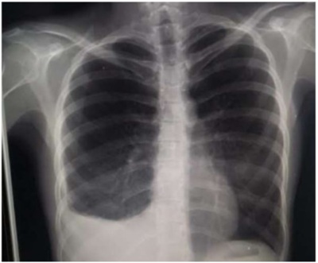
A Adenocarcinoma pulmonar
B Tuberculose pleural
C Sarcoidose
D Dengue
Questão 59 · Derrame pleural tuberculoso · Derrame pleural neoplásico · Derrame pleural parapneumônico · 4000031808Com relação ao derrame pleural, assinale a alternativa CORRETA:
A Derrame pleural da insuficiência cardíaca envolve preferencialmente o hemitórax esquerdo.
B Derrame pleural causado por neoplasia são geralmente exsudatos.
C Derrame parapneumonico de pneumonia bacteriana é pouco comum.
D O relacionado à tuberculose pleural geralmente é transudato bilateral,com predomínio de polimorfonucleares.
Questão 60 · Indicação · Manejo clínico e diagnóstico · Quadro clínico · 4000029850Paciente do sexo feminino, de 60 anos, trabalhadora rural, tabagista desde os 16 anos (seis a oito cigarros de palha por dia), apresentando queixa de tosse não produtiva e dispneia progressiva nos últimos seis meses, atualmente para mínimos esforços. Ao exame físico: regular estado geral, taquipneica, afebril, anictérica, acianótica. FR: 28 IRM FC: 120 BPM. Murmúrio vesicular reduzido em hemitórax direito, submacicez à percussão nos 2/3 inferiores do hemitórax esquerdo. Algo diminuído em base direita. Sat. 89% em ar ambiente. Discreto edema em membros inferiores, com sinal do cacifo positivo 1+/4+. A tomogra a computadorizada de tórax mostra as seguintes imagens: Com base nas informações apresentadas, qual é o próximo passo no atendimento dessa paciente?
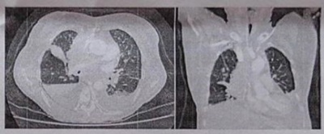
A Solicitar tomografia computadorizada de tórax de alta resolução, com contraste, paramelhor avaliação do parênquima pulmonar e do mediastino.
B Solicitar PET SCAN para diagnóstico e estadiamento de provável neoplasia pulmonar.
C Toracocentese para alívio dos sintomas e para diagnóstico.
D Antibioticoterapia e drenagem torácica.
Questão 61 · Tratamento · Derrame pleural parapneumônico complicado · Derrame pleural parapneumônico · 4000025705Paciente do sexo masculino, de 38 anos, com quadro de tosse há quinze dias, dor em hemitórax direito há dez dias e febre esporádica há sete dias, evoluindo com astenia e inapetência. Realizou raio X de tórax que apresentou opacidade homogênea em terço inferior do hemitórax direito, sugestivo de derrame pleural. Foi realizada uma toracocentese. Os seguintes parâmetros foram encontrados à análise do líquido: ""Líquido pleural de aspecto turvo. PH = 6,8. DHL: 2000 UI/l (líquido). DHL = 420 UI/l (sangue). Proteínas: 4,9 mg/dl (líquido). Proteínas séricas: 3,8 mg/dl (sangue). Glicose: 38 mg/dl (líquido). Leucometria no líquido: 40.000, leucócitos com 87% de neutró los."" USG de tórax: derrame pleural em HTD, sem aparente loculação. Nesse caso, o paciente é portador de:
A derrame pleural parapneumônico não complicado e o tratamento de escolha é antibioticoterapia e toracocentese de alívio.
B derrame pleural parapneumônico complicado e o tratamento é antibioticoterapia e toracostomia com drenagem pleural fechada.
C empiema pleural, fase III, e o tratamento de escolha está limitado à drenagem torácica.
D empiema pleural, fase IIb, e o tratamento de escolha é descorticação pulmonar ampliada e antibioticoterapia endovenosa de amplo espectro.
Questão 62 · Empiema · Manejo clínico e diagnóstico · Derrame pleural parapneumônico simples · 4000025646Paciente de 58 anos, internado em UTI há dez dias para tratamento de pneumonia complicada com derrame pleural. Realizada toracocentese para análise de rotina do líquido pleural. Nessa situação clínica, os exames necessários para diagnóstico de derrame pleural parapneumônico complicado são:
A pH, DHL, glicose e amilase.
B pH, triglicérides e amilase.
C pH, DHL, glicose e leucometria.
D cultura, pH e ADA (adenosina deaminase.
Questão 63 · Inf ecções pulmonares · Derrame Pleural · Pneumologia · 4000023581Um paciente de 25 anos de idade, HIV positivo, queixa-se de tosse produtiva e febre há cinco dias, com piora nos últimos três dias, apresentando também desconforto respiratório e dor pleurítica à esquerda. Foi avaliado no pronto-socorro, onde se apresentava sudoreico, taquipneico (FR = 44 irpm), FC = 102 bpm, Sp02 = 94%. Na ausculta, havia estertores em terço médio do pulmão direito e redução importante dos murmúrios na base direita. Foi realizada a radiogra a de tórax, conforme imagem. Acerca desse caso clínico e com base nos conhecimentos médicos correlatos, julgue o item a seguir. Derrames parapneumônicos não complicados podem ser tratados de maneira conservadora, sem drenagem de tórax.

A Certo.
B Errado.
Questão 64 · Etiologias específ icas · Pneumologia · Critérios de Light · 4000128218Mulher de 65 anos foi diagnosticada com derrame pleural à direita à radiogra a de tórax. A análise do líquido pleural observou-se relação entre concentração de proteína no líquido pleural/concentração de proteína no soro = 0,34 e relação entre concentração de desidrogenase lática (LDH) no líquido pleural/concentração de LDH no soro = 0.45. Considerando os dados disponíveis, qual das seguintes condições é a causa mais provável do derrame pleural nesse paciente?
A Carcinoma broncogênico
B Cirrose hepática
C Embolia pulmonar
D Tuberculose
Questão 65 · Derrame Pleural · Derrame pleural parapneumônico · 4000120732Homem de 42 anos apresenta dispneia moderada, associada à dor torácica ventilatório-dependente, febre e tosse, há 10 dias. Exame físico: MV abolido em 1/3 inferior do hemitórax direito. Radiogra a de tórax: velamento do 1/3 inferior do hemitórax direito. Realizada toracocentese diagnóstica. Exames do líquido pleural: pH 7,25; DHL 500 U/L; glicose 90 mg/dL; proteína 4,5 g/dL; celularidade 75% de polimorfonucleares. Exames séricos: DHL 450 U/L; proteína 6,0 g/dL. O diagnóstico do derrame pleural e a conduta mais adequada são:
A derrame parapneumônico; toracocentese de alívio.
B empiema pleural; toracostomia com drenagem pleural fechada.
C derrame parapneumônico; toracostomia com drenagem pleural fechada.
D empiema pleural; videotoracoscopia e drenagem pleural fechada.
Questão 66 · Pneumologia · Critérios de Light · 4000117589De acordo com os critérios tradicionais de Light, um derrame pleural é definido como exsudato, se apresentar
A razão da proteína sérica/proteína do líquido pleural > 0,6 e razão DHL sérico/ DHL dolíquido pleural > 0,5.
B DHL do líquido pleural > 50% do limite superior do DHL sérico (determinado pelolaboratório).
C razão proteína do líquido pleural/proteína sérica > 0,5 ou razão DHL do líquidopleural/DHL sérico > 0,6.
D colesterol do líquido pleural acima de 50% do colesterol sérico.
E albumina do líquido pleural > 1 g/ dL.
Questão 67 · Empiema · Manejo clínico e diagnóstico · Derrame pleural tuberculoso · 4000117037Um paciente proveniente do norte de Minas Gerais veio com história de febre diária, tosse, dispneia, associado a perda de 5 kg no último mês. Exames revelam: hemoglobina = 9,5 g/dl; creatinina = 0,3 mg/dl; albumina = 3,0 mg/dl; BK escarro negativo em 2 amostras. RX de tórax com derrame pleural extenso em hemitórax D. Puncionado líquido pleural, com pH 7,31, com 550 cél/mm³, 10% neutró lo, 85% de linfócitos, proteínas 4,7 g/dl, adenosina deaminase = 70 UI/L; LDH = 570 UI/L. Estes achados favorecem qual hipótese diagnóstica?
A Pneumonia comunitária.
B Bronquiolite obliterante.
C Empiema pleural.
D Tuberculose pleural.
E Neoplasia pulmonar.
Questão 68 · Empiema · 4000112995Paciente com febre, dor torácica e tosse, há 5 dias, apresenta Rx de toráx com derrame pleural. A punção do liquido mostrou um empiema. As características com relação à presença de leucócitos, ao predomínio de células, à glicose e ao pH, respectivamente:
A diminuída; mononucleares; normal; > 7,3.
B diminuída; mononucleares; baixa; < 7,3.
C aumentada; polimorfonucleares; normal; >7,3.
D aumentada; polimorfonucleares; baixa; >7,3.
E aumentada; polimorfonucleares; baixa; < 7,3.
Questão 69 · Semiologia · Manejo clínico e diagnóstico · Quadro clínico · 4000112181Analise a radiografia de tórax a seguir. As alterações encontradas no exame físico desse paciente são:

A expansibilidade simétrica e frêmito toracovocal reduzido em hemitórax direito.
B frêmito toracovocal aumentado e expansibilidade reduzida em hemitórax esquerdo.
C som maciço à percussão e sons respiratórios aumentados, em base do pulmão esquerdo.
D murmúrio vesicular e frêmito toracovocal abolidos em terço inferior do hemitórax esquerdo.
E frêmito toracovocal e expansibilidade reduzidas em hemitórax direito.
Questão 70 · Quilotórax · 4000102496O quilotórax ocorre quando a linfa do ducto torácico se acumula no espaço pleural. Assinale a alternativa INCORRETA:
A Quilo é um líquido branco leitoso com alta concentração de triglicerídeos, quilomicrons e glóbulos brancos.
B É nutricionalmente rico e depende do estado nutricional e dietético do paciente.
C Análise do lÍquido pleural com presença de quilomicrons conforma o diagnóstico.
D Se medidas conservadores falham, a intervenção cirúrgica pode ser considerada entre 14 e 21 dias.
Questão 71 · Fisiopatologia · Derrame pleural tuberculoso · Derrame pleural no TEP · 4000097039São causas de derrame pleural transudativo, exceto:
A Tuberculose pleural.
B Embolia pulmonar.
C Síndrome nefrótica.
D Insuficiência cardíaca congestiva.
E Atelectasia pulmonar.
Questão 72 · Empiema · Derrame pleural parapneumônico simples · Decorticação · 4000097030Sobre derrames pleurais complicados:
A O derrame pleural complicado deve ser drenado precocemente, caso contrário, procedimentos maiores, incluindo toracotomia e descorticação pulmonar, podem ser necessários.
B Radiografia de tórax mostrando derrame pleural volumoso, ou com nível hidro-aéreo, ou com loculações, ou com sinais de espessamento pleural sugerem o diagnóstico de derrames complicados e a necessidade de drenagem torácica.
C A duração do tratamento com antibióticos no empiema deve ser prolongada, em geral entre três e quatro semanas.
D Diferentes agentes bacterianos, incluindo gram-negativos, pneumococo, estafilococos e anaeróbios, podem estar implicados na etiologia dos empiemas.
E Todas acima estão corretas.
Questão 73 · Quilotórax · 4000095449Assinale a alternativa INCORRETA com relação ao Quilotórax:
A Nos pacientes com quilotórax devido a doenças neoplásicas e drenagem persistente, apesar dos tratamentos quimioterápicos e radioterápicos ideais, a realização da pleurodese não é eficaz em prevenir a recorrência, sendo indicada a ligadura do ducto torácico por videotoracoscopia ou toracotomia.
B O derrame pleural quiloso é usualmente secundário ao trauma do ducto torácico (geralmente iatrogênico, após operação torácica) ou, mais raramente, manifestação de uma doença maligna avançada com metástase linfática.
C O diagnóstico consiste em análise do líquido pleural, com presença de quilomicrons ou nível de triglicerídeos maior que 110mg/dL.
D O tratamento inicial não é cirúrgico, com drenagem torácica em selo d’agua e dieta com triglicerídeos de cadeia média ou nutrição parenteral total.
Questão 74 · Etiologias específ icas · Manejo clínico e diagnóstico · Quadro clínico · 4000085842Considere as situações clínicas abaixo, as quais têm, entre outros achados, a presença de derrame pleural. I - Homem de 25 anos apresentou início abrupto de tosse com expectoração purulenta, dispneia, dor ventilatoriodependente à direita, tremores e mialgias. O exame físico revelou febre, e a ausculta do hemitórax posterior direito, estertores inspiratórios em campo médio e diminuição de murmúrio vesicular na base pulmonar, além de macicez à percussão dessa região. II. - Homem de 50 anos, etilista, vinha apresentando desconforto no quadrante superior direito do abdômen, mal-estar e anorexia. O exame físico revelou mucosas levemente descoradas, telangiectasias e abdômen com macicez móvel. Havia, também macicez à percussão e abolição de murmúrio vesicular no terço inferior do hemitórax posterior direito. III. - Mulher de 60 anos, hipertensa em tratamento irregular, vinha apresentando dispneia progressiva aos esforços, ortopneia e edema nos membros inferiores, com piora ao nal do dia. A ausculta cardíaca revelou taquicardia e ritmo regular, em 3 tempos (B3), turgência jugular a 45°, estertores pulmonares bilateralmente, diminuição de murmúrio vesicular e macicez em ambos os terços inferiores dos hemotóraces posteriores e edema dos membros inferiores. Considerando a principal hipotése diagnóstica de cada uma das situações, para quais delas são esperados os seguintes resultados na análise do líquido pleural: proteína de 5,0 g/dl (proteína sérica: 6,5 d/dl), LDH de 200 U/I (LDH sérico: 220 U/l) e glicose de 50 mg/dl?
A Apenas para I
B Apenas para II
C Apenas para III
D Apenas para II e III
E Para I, II e III
Questão 75 · Def inição · Empiema · Manejo clínico e diagnóstico · 4000066854Homem, 46 anos de idade, admitido em UTI por politrauma (motocicleta versus carro), intubado em ventilação mecânica, modo assistido-controlado. O paciente evoluiu com aumento na quantidade de secreção pulmonar, febre e surgimento de novo in ltrado na radiogra a de tórax, sendo introduzida antibioticoterapia. Pela persistência da febre e aparecimento de derrame pleural, o derrame foi puncionado. O achado de pior prognóstico no líquido pleural deste paciente é:
A pH de 7,22
B Raras bactérias no Gram
C Glicose de 64 mg/dL
D Proteína de 2,8 mg/dL
Questão 76 · Manejo clínico e diagnóstico · Tratamento cirúrgico · 4000060588Em relação ao tratamento da fase 2 (fase fibrino-purulenta) do empiema pleural, assinale a alternativa CORRETA.
A O tratamento deve ser principalmente cirúrgico, porque a coleção pleural não será desfeita com sucesso somente com drenagem pleural, devido a estar septada e não acessível por completo pelo dreno.
B O tratamento deve ser principalmente clínico, com hidratação vigorosa, monitorização para órgãos alvos para sepse, antibioticoterapia de largo espectro, manutenção do paciente em UTI. Por ser uma infecção gravíssima e potencialmente letal, o paciente não resistirá a uma abordagem cirúrgica nesta fase, sendo sensato prévia estabilização do quadro clínico.
C O tratamento deve ser feito sobre duas diretrizes principais, sendo uma, tratamento clínico intensivo, com antibioticoterapia de largo espectro, hidratação vigorosa, monitorização de órgãos alvos para sepse, e a outra diretriz, cirurgia de descorticação pulmonar para tratamento da coleção.
D O tratamento deve ser drenagem torácica aberta, através de confecção de uma pleurostomia, por ser um tratamento eficaz na limpeza da pleura, de fácil manipulação no dia a dia, podendo inclusive gerar alta hospitalar precoce ao paciente, e com solução do problema em definitivo em alguns meses.
E O tratamento deve ser conduzido, principalmente, com antibioticoterapia de largo espectro, por ser uma complicação comum de pneumonias bacterianas ou de pós- operatórios de cirurgias abertas de tórax, não se deve poupar tempo e custos de antibióticos por ser uma infecção potencialmente letal.
Questão 77 · Manejo clínico e diagnóstico · Toracocentese diagnóstica · Exsudato X Transudato · 4000039736Observe algumas informações obtidas por toracocentese e marque a opção correta: LDH pleural = 160 U/L; LDH sérico = 200 U/L; Proteína pleural = 2,8 g/dL; proteína sérica 4 g/dL.
A O resultado é de exsudato.
B O resultado é transudato.
C As informações são insuficientes.
D Somente com o pH pode-se definir exsudato ou transudato.
Questão 78 · Critérios de Light · Outras causas de transudato · Outras causas de exsudato · 4000035011O resultado da análise do derrame pleural apresenta a relação proteína do líquido pleural / proteína sérica igual a 0,8 e LDH do líquido pleural / LDH sérico de 1,5. O resultado descrito é sugestivo de:
A Insuficiência cardíaca congestiva.
B Neoplasia
C Síndrome nefrótica
D Cirrose hepática.
Questão 79 · Empiema · Manejo cirúrgico · Tratamento · 4000020921Um paciente de 33 anos, com febre persistente e derrame pleural à esquerda, iniciou anibioticoterapia há 4 dias, sem melhora clínica. A punção pleural revelou líquido com aspecto turvo, pH = 6,97, glicose = 35 mg%, bacterioscopia positiva e cultura com Staphylococcus aureus. A conduta mais adequada seria realizar:
A punções repetidas de tórax
B toracotomia e decorticação
C punção esvaziadora e observação
D pleuroscopia
E drenagem aberta
Questão 80 · Empiema · 4000002369Quais são as três fases do Empiema Pleural?
A Edematosa, catarral e crônica.
B Eritematosa, purulenta e cavitária.
C Exsudativa, fibrinopurulenta e organização.
D Piogênica, fibrinosa e necrótica.
Questão 81 · Semiologia · Quadro clínico · Radiograf ia de tórax · 4000128295Mulher, 40 anos, portadora de câncer de mama com metástase pleural. Compareceu à consulta médica queixando-se de dispneia. Trouxe consigo radiogra a de tórax que evidenciava imagem de hipotransparência homogênea nos dois terços inferiores do hemitórax direito compatível com derrame pleural. Quais são os achados esperados ao exame do tórax, à direita?
A Aumento do frêmito tóraco-vocal, hipersonoridade à percussão, diminuição do murmúrio vesicular fisiológico
B Aumento do frêmito tóraco-vocal, submacicez à percussão, presença de som bronquial
C Redução do frêmito tóraco-vocal, hipersonoridade à percussão, presença de som bronquial
D Redução do frêmito tóraco-vocal, submacicez à percussão, diminuição do murmúrio vesicular fisiológico
Questão 82 · Empiema · Manejo clínico e diagnóstico · Derrame pleural tuberculoso · 4000120514Homem, 81 anos, refere dispneia progressiva aos esforços há três meses, associada a perda ponderal de 7 kg no período, além de tosse seca. É hipertenso, em uso de losartana e hidroclorotiazida, ex-tabagista, tendo fumado por um período de 5 anos, cerca de 15 cigarros ao dia, e parado de fumar há mais de 30 anos. O exame físico revela redução global do murmúrio vesicular em hemitórax esquerdo, com macicez à percussão e ausência de sinais de desconforto respitratório. A radiogra a evidenciou volumoso derrame pleural à esquerda. Após toracocentese diagnóstica, obteve-se a seguinte análise do líquido pleural: aparência amarelo citrino; desidrogenase lática = 1 500 U/L (sérico = 220 U/L); proteínas totais = 4,9 g/dL (sérica = 5,9 g/dL); citologia total = 1 350/mm³ leucócitos – diferencial: 93% de linfomononucleares e 7% de polimorfonucleares); glicose = 69 mg/dL (sérica = 80 mg/dL). A análise do caso permite concluir que se trata provavelmente de derrame pleural:
A parapneumônico.
B de origem neoplásica.
C com carcaterísticas de empiema pleural.
D secundário à insuficiência cardíaca.
E por tromboembolismo pulmonar.
Questão 83 · Complicações · 4000118120Qual é o volume máximo que devemos retirar de uma toracocentese para evitar edema pulmonar pós reexpansão? Em litros
A 0,5
B 1
C 1,5
D 2
Questão 84 · Derrame pleural tuberculoso · Tuberculose extrapulmonar · 4000116494No Derrame Pleural de características exsudativas, qual dos exames tem elevada sensibilidade e especi cidade para Derrame Pleural Tuberculoso?
A ADA.
B Dimero D.
C Contagem de células total e diferencial.
D Pesquisa de BK no liquido pleural por microscopia direta.
E NDA.
Questão 85 · Empiema · Manejo clínico e diagnóstico · Quadro clínico · 4000108638De acordo com os critérios de light para classificação dos derrames plurais podemos afirmar que líquido pleural com glicose 80, proteínas 4 0, DHL 300 em paciente com imagem ao raio-x de tórax de velamento do campo pulmonar direito, saturando 100% em ar ambiente, frequência respiratória de 10 movimentos por minuto e exames laboratoriais Ur 100, Cr 1,5. Proteínas totais 6, albumina de 3,6,. Glicose 100. DHL 298. Lactato de 5. Podemos afirmar:
A este paciente tem um empiema e deve ser drenado imediatamente
B este paciente tem um transudato e deve ser drenado imediatamente
C este paciente tem um transudato e não deve ser drenado imediatamente
D este paciente tem um exsudato
E os dados não são suficientes para fazer qualquer afirmação
Questão 86 · Empiema · Manejo clínico e diagnóstico · Derrame pleural tuberculoso · 4000104489A causa mais comum de Empiema Pleural é:
A Neoplasia.
B Cirrose hepática.
C Tuberculose pleural.
D Pneumonia.
Questão 87 · Manejo clínico e diagnóstico · Tratamento cirúrgico · Análise do líquido pleural · 4000103279Homem de 43 anos de idade vem ao pronto-socorro por febre, cansaço e tosse produtiva há três semanas. No quinto dia de quadro, procurou outro serviço de emergência no qual foi feito diagnóstico de pneumonia lobar à esquerda com velamento do seio costofrênico ipsilateral. Foi prescrita antibioticoterapia com amoxicilina por 10 dias, utilizada corretamente. Apesar de ter apresentado uma melhora inicial, ao terminar o tratamento com amoxicilina, houve piora de falta de ar e recidiva da febre. No exame clínico, pulso = 116 bpm; frequência respiratória = 30 irpm; pressão arterial = 102 x 66 mmHg; saturação de oxigênio em ar ambiente = 91%. Diminuição da ausculta pulmonar na base do hemitórax esquerdo com estertores grossos. O restante do exame clínico é normal. Foram solicitados os exames de imagem a seguir: Qual o diagnóstico e a conduta para o caso?
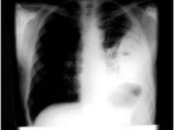
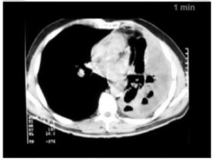
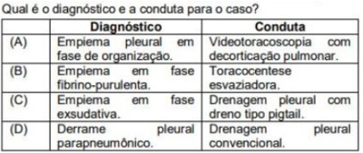
A Diagnóstico: empiema pleural em fase de organização; Conduta: videotoracoscopia com decorticação pulmonar.
B Diagnóstico: empiema em fase fibrino-purulenta; Conduta: toracocentese esvaziadora.
C Diagnóstico: empiema em fase exsudativa; Conduta: drenagem pleural com dreno tipo pigtail.
D Diagnóstico: derrame pleural parapneumônico; Conduta: drenagem pleural convencional.
Questão 88 · Derrame pleural tuberculoso · Derrame pleural neoplásico · 4000100918Derrame pleural associado a doenças do tecido conectivo São causas de Adenosina Deaminase (ADA) >40 U/L no líquido pleural:
A Tuberculose, Empiema, Linfoma.
B Linfoma, Tuberculose, ICC.
C Tuberculose, Sarcoma de Kaposi, Artrite Reumatoide.
D Sarcoma de Kaposi, Tuberculose, Empiema.
Questão 89 · Quilotórax · 4000099188Menina, 3a, submetida a correção de coarctação da aorta via toracotomia esquerda há dois dias. Durante a troca do frasco de drenagem torácica notou-se secreção leitosa em todo o sistema. A conduta é:
A Jejum e nutrição parenteral.
B Troca do sistema do dreno.
C Toracoscopia.
D Pleurodese química.
Questão 90 · Derrame Pleural · Indicação · Manejo clínico e diagnóstico · 4000094431A causa mais comum de derrame pleural transudativo é:
A Atelectasia
B Tromboembolia pulmonar
C Insuficiência renal
D Insuficiência cardíaca congestiva
E Cirrose hepática com hipoalbuminemia
Questão 91 · Critérios de Light · 4000094373Critérios de Light para exsudato de líquido pleural: I) Relação de proteína pleural / proteína sérica ≥ 0,6; II) Relação LDH pleural / LDH sérica ≥ 0,6; III) LDH pleural ≥ 2/3 LDH sérica (LSN) ; Com relação aos critérios de Light p/ derrame pleural, qual está INCORRETO:
A Apenas I
B Apenas II
C Apenas III
D II e III
E I e III
Questão 92 · Derrame pleural tuberculoso · Derrame pleural neoplásico · Derrame pleural no TEP · 4000082757Derrame pleural que se refaz rapidamente sugere:
A Tuberculose.
B Infecção.
C Neoplasia.
D Embolia pulmonar.
E Insuficiência cardíaca.
Questão 93 · Tratamento cirúrgico · Análise do líquido pleural · 4000078515Homem, 45 anos, com febre, queda do estado geral, tosse produtiva e dispneia há dois meses. Exame físico: taquipneico, febril, taquicárdico e com murmúrio vesicular abolido no 1/3 inferior do hemitórax direito. RX de tórax: condensação pulmonar em lobo superior direito e derrame pleural ocupando 2/3 do hemitórax. Toracocentese: líquido pleural purulento. Além de antibioticoterapia, a intervenção melhor indicada neste momento é:
A Toracotomia e drenagem aberta.
B Nova toracocentese com esvaziamento da cavidade.
C Drenagem intercostal fechada do hemitórax direito.
D Vídeo pleuroscopia seguida de pleurodese.
Questão 94 · Empiema · Manejo clínico e diagnóstico · Derrame pleural parapneumônico simples · 4000078006Paciente com 46 anos, tabagista 40 anos-maço, apresentando febre, dispneia e dor torácica ventilatório-depedente. Relata tosse produtiva com expectoração purulenta. Nega perda de peso. Ausculta evidenciou murmúrio vesicular diminuído em bases, bilateralmente, com macicez à percussão. Radiografia de tórax mostrada abaixo: Assinale a afirmativa INCORRETA:
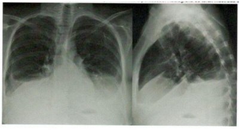
A Presença de derrame pleural cuja radiografia de tórax em decúbito lateral não modifica sua forma, evidencia encarceramento pulmonar e obrigatoriamente deverá ser drenado por pleuroscopia.
B O líquido pleural com LDH>1000 mg/dl, glicose 80mg/dl, pH: 6,9 é indicativo de empiema pleural e deverá ser obrigatoriamente drenado.
C Derrame pleural com carcaterística citrina, LDH de 800 mg/dl, pH: 7,1, glicose de 80mg/dl e bacterioscopia evidenciando Gram positivo caracteriza o derrame como empiema e obrigatoriamente deverá ser drenado.
D Dosagem de triglicérides >110mg/dl no líquido pleural confirma derrame linfomatoso e deverá ser investigado linfoma de mediastino.
Questão 95 · Etiologias específ icas · Manejo clínico e diagnóstico · Pneumologia · 4000077157Das opções abaixo, a que apresenta causas etiológicas dos derrames pleurais classificados com exsudatos é:
A Empiema, linfoma, pancreatite, traumatismo torácico.
B Sarcoidose, parasitário, embolismo pulmonar e colapso pulmonar.
C Fúngico, desnutrição com hipoalbuminemia, síndrome nefrótica e adenocarcinoma pleural.
D Carcinoma metastático, embolia pulmonar, quilotórax e cirrose.
E Artrite reumatoide, insuficiência cardíaca congestiva, lúpus eritematosos sistêmicos.
Questão 96 · Manejo clínico e diagnóstico · Derrame pleural tuberculoso · Derrame pleural neoplásico · 4000053170Em relação aos derrames pleurais, assinale a alternativa correta.
A São etiologias de derrame pleural exsudativo: carcinoma broncogênico, síndrome nefrótica, tuberculose, lúpus eritematoso sistêmcio.
B São etiologias de derrame pleural transudativo: insuficiência cardíaca congestiva, cirrose hepática, colapso lobar, retenção hídrica em insuficiência renal aguda.
C Todo derrame pleural relacionado à doença neoplásica poderá ser considerado derrame pleural maligno.
D O derrame pleural maligno deverá ser tratado de forma conservadora, pois indica doença neoplásica avançada, sem prognóstico favorável para o aumento da sobrevida.
E Os derrames pleurais benígnos deverão ser tratados, obrigatoriamente, com toracocentese.
Questão 97 · Manejo clínico e diagnóstico · Análise do líquido pleural · Cirurgia · 4000037613Um homem, 35 anos, foi admitido devido a ferimento por arma de fogo em abdome e submetido à laparotomia exploradora, na qual foi identi cada lesão entre corpo e cauda de pâncreas. Realizada drenagem ampla da região e lavagem da cavidade peritoneal. No sétimo dia de pós- operatório, o paciente evoluiu com febre (38,5°C) e dor torácica ventilatório-dependente a esquerda. Ao exame físico: regular estado geral, descorado, acianótico, com murmúrio vesicular diminuído em base pulmonar esquerda, eupneico e estável hemodinamicamente. O abdome estava ácido e discretamente doloroso à palpação profunda, com descompressão brusca do abdome indolor. SatO₂ = 95% com cateter de O₂ a 2L/min. Foi realizado radiogra a de tórax, cuja imagem está apresentada a seguir: Foi então indicada a realização de tocacocentese diagnóstica, cuja análise do líquido pleural revelou aspecto: aspecto turvo; pH = 8; densidade = 1015; = desidrogenase lática (LDH) pleural: 1.463mg/dL; adenosina deaminase (ADA) = 6U/L; amilase = 1.821mg/dL; citologia: predominância de células polimorfonucleares; bacteriologia negativa; ausência de fungos e ausência de células malignas. Relações proteína pleural/proteína plasmática = 0,55 e LDH pleural/LDH plasmático = 7,0. Qual seria a melhor conduta?
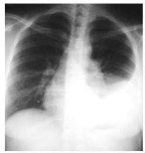
A Toracocentese de alívio
B Tocacostomia fechada em selo d'água
C Pleuroscopia videoassistida
D Pleurostomia
Questão 98 · Empiema · Análise do líquido pleural · 4000007555Qual dos exames laboratoriais do líquido pleural é o mais sugestivo de empiema pleural?
A DHL acima de 500 U/L.
B Amilase acima de 200 U/L.
C Triglicerídeos acima de 110 mg/dl.
D pH abaixo de 7,2.
Questão 99 · Empiema · Manejo clínico e diagnóstico · Tratamento · 4000004871Qual das situações abaixo NÃO representa critério para drenagem torácica em selo d'água?
A Paciente cardiopata com derrame pleural bilateral, maior a direita, evoluindo com insuficiência respiratória aguda.
B Paciente assintomático com derrame pleural a esclarecer. Submetido a toracocentese diagnóstica com análise: pH 7,16, DHL 1100 ui/l, Glicose 5 mg/dl, ADA 50 u/l, celularidade: 70% neutrófilo, 28% linfócitos. Sem crescimento no Gram. Cultura negativa.
C Paciente com queixa de dor torácica à esquerda e diagnosticado com derrame pleural esquerdo. Submetido a toracocentese diagnóstica: pH 7,2, DHL 800 ui/l, Glicose 45 mg/dl, celularidade com predomínio de neutrófilos. Sem crescimento ao Gram e com crescimento na cultura de Streptococcus pyogenes.
D Paciente com história de tosse produtiva, febre e dor torácica há 7 dias. Realizou punção pleural sem análise bioquímica, mas com líquido turvo e fétido.
E Paciente vítima de trauma automobilístico contra anteparo fixo, taquidispneico com uso de musculatura acessória na ausculta com murmúrio vesicular diminuído com hipersonoridade à percussão
Questão 100 · Derrame Pleural · Pneumologia · 4000125006Paciente do sexo masculino, 19 anos, previamente hígido, há cerca de três semanas iniciou com quadro de tosse produtiva com escarro ferruginoso e febre de até 40ºC. Procurou atendimento médico; realizou hemograma que mostrou leucocitose de 22.000/mm³ com 10% de bastões; creatinina 1,2 mg/dl; ureia 60 mg/dl e radiogra a de tórax com consolidação em lobo inferior esquerdo, e obliteração do seio costofrênico ipsilateral. Foi hospitalizado e se iniciou tratamento para pneumonia comunitária com amoxicilina-clavulanato e azitromicina. Durante a internação, persistia com febre e evoluiu com dor torácica ventilatório-dependente à esquerda de forte intensidade. Realizou radiogra a de tórax de controle, com piora do derrame pleural. Foi submetido a toracocentese diagnóstica com os seguintes achados: pH 6,90; glicose 20 mg/dl; proteínas totais 6,1 g/dl; LDH 1.079 UI/L; bacterioscopia pelo Gram: ausência de bactérias visualizadas; pesquisa de BAAR negativa. Em relação aos derrames pleurais, analise as a rmativas a seguir e assinale a alternativa CORRETA: I. Nos derrames pleurais parapneumônicos, um pH < 7,2 sugere um derrame complicado, com necessidade de drenagem torácica, pois pode evoluir para empiema; II. Deve-se realizar a dosagem sérica de LDH e proteínas totais. Para o diagnóstico de exsudato, são necessários dois ou mais critérios de Light: (1) relação proteína pleural/proteína plasmática > 0,5; (2) relação LDH pleural/LDH plasmático > 0,6; (3) LDH pleural maior do que 2/3 do valor de referência plasmático; III. Um derrame pleural parapneumônico por Proteus spp. pode se apresentar com PH > 7,5 devido à produção de amônia por essa bactéria; IV. Os derrames pleurais associados à artrite reumatoide, os derrames pleurais parapneumônicos e os empiemas são os que mais frequentemente cursam com glicose baixa no líquido pleural. Respostas: 1 12 23 34 45 56 67 78 89 100
A Todas as afirmativas estão corretas.
B Somente a afirmativa I está correta.
C Somente as afirmativas I, III e IV estão corretas.
D Somente a afirmativa II está correta.
E Somente as afirmativas I e IV estão corretas.